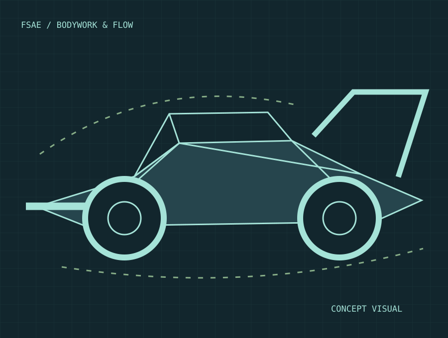

CONCEPT VISUAL / PHOTO TO COME 01 / FEATUREDFinding performance in every curve.
Leading the design and iteration of the aerodynamic bodywork and nose cone for Anteater Electric Racing at UC Irvine.
+96%simulated downforce versus the previous package
01Iterate nose tip height, angle of attack, loft profiles, mounting, and curvature in SolidWorks.
02Compare pressure, velocity, and separation behavior in STAR-CCM+.
03Use continuity, Bernoulli, and aerodynamic force estimates to cross-check CFD trends.